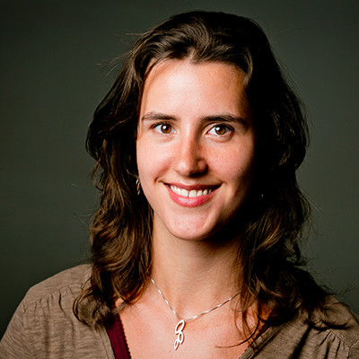

Hoi, ik ben Djonie. Ik ben een gepassioneerde onderwijsprofessional. Ik heb interesse in onderwijs, techniek en content. Mijn kwaliteit is om van complexe problemen tot simpele oplossingen te komen. Daarbij ontwikkel ik concept tot eindproduct.
Juf
Ooit dacht ik juf te willen worden, maar tijdens het doorlopen van de PABO had ik al snel door dat ik de methoden interessanter vond dan de leerlingen. Niet per se een goede kwaliteit voor een juf... Vandaar dat ik na de PABO de pre-master en master Onderwijskunde heb afgerond.
E-learning
Tijdens mijn stage ben ik de wereld van de e-learning ingerold. Daar heb ik geleerd hoe ik van didactische blauwdrukken concreet lesmateriaal kon ontwikkelen. Ik leerde ook werken met diverse CMS'en, waaronder Smartbuiler. Hier bloeide mijn liefde voor techniek.
Gepersonaliseerd onderwijs
In de mooie reis met Kunskapsskolan heb ik mijn liefde voor onderwijs, content en techniek kunnen combineren. Ik heb het Nederlandse platform opgebouwd, alsook de didactische onderlegger voor het lesmateriaal dat ingezet wordt bij gepersonaliseerde leeroplossingen in het voortgezet onderwijs.
Voortgezet onderwijs
Nu werk ik voor KLIK als Product Owner. Hier mag ik nog sterker bepalen hoe het platform eruit komt te zien. In mijn huidige werk komen onderwijsprocessen en techniek samen. Een mooie uitdaging!